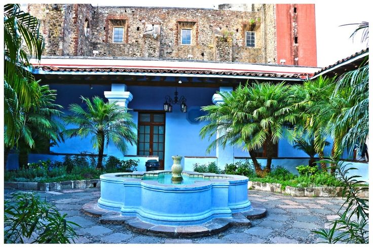
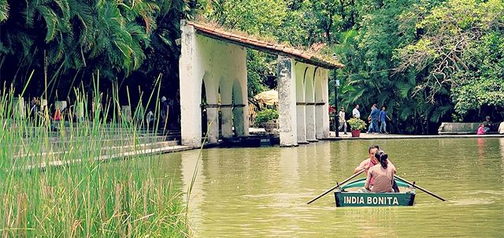

📸 Galería de Imágenes


🏛️ Historia y Reseña Completa
El Jardín Borda es una joya histórica del siglo XVIII construida originalmente como una casa de descanso por orden del acaudalado minero taxqueño José de la Borda. El diseño destaca por sus imponentes jardines de estilo francés y su estanque romántico. Durante la época del Segundo Imperio Mexicano, el inmueble sirvió como residencia imperial de verano para el emperador Maximiliano de Habsburgo y su esposa, la emperatriz Carlota.
Hoy en día, el espacio funciona como un activo centro cultural gestionado por la Secretaría de Cultura del estado. En su interior alberga múltiples salas de exhibición de artes plásticas, esculturas y fotografía, además de ser sede de conciertos, talleres artísticos y eventos teatrales que enriquecen la vida cultural de la entidad.